Small trees up to 10 m tall.
10 ಮೀ ಎತ್ತರದವರೆಗಿನ ಸಣ್ಣ ಗಾತ್ರದ ಮರಗಳು.
Small trees up to 10 m tall.
சிறிய மரம் 10 மீ. உயரம் வரை வளரக்கூடியது.
Bark brown, irregularly scaly; blaze pinkish.
ತೊಗಟೆ ಕಂದು ಬಣ್ಣ ಹೊಂದಿದ್ದು,ಅನಿಯತವಾಗಿ ಚಕ್ಕೆಯುಕ್ತವಾಗಿರುತ್ತದೆ;ಕಚ್ಚು ಮಾಡಿದ ಜಾಗ ನಸುಗೆಂಪು .
Bark brown, irregularly scaly; blaze pinkish.
மரத்தின் பட்டை ப்ரவுன், ஒழுங்கற்ற செதில்களாக உதிருபவை; உள்பட்டை பிங்க் நிறமானது.
Young branchlets terete, fulvous pubescent when young, later glabrous.
ಕಿರುಕೊಂಬೆಗಳು ದುಂಡಾಗಿದ್ದು ಎಳೆಯದಾಗಿದ್ದಾಗ ನಸುಗೆಂಪಿನಿಂದ ಕೂಡಿದ ಹಳದಿ ಬಣ್ಣದ ಮೃದು ತುಪ್ಪಳದಿಂದ ಕೂಡಿದ್ದು ನಂತರ ರೋಮರಹಿತವಾಗುತ್ತವೆ.
Young branchlets terete, fulvous pubescent when young, later glabrous.
சிறியநுனிக்கிளைகள் குறுக்குவெட்டுத் தோற்றத்தில் வளையமானது, இளம்பருவத்தில் உரோமங்களுடையது, முதிரும் போது உரோமங்களற்றது.
Latex milky white, profuse.
ಸಸ್ಯ ಕ್ಷೀರ ಹಾಲಿನ ಬಿಳಿ ಬಣ್ಣ ಹೊಂದಿದ್ದು ವಿಫುಲವಾಗಿರುತ್ತದೆ.
Latex milky white, profuse.
வெள்ளை நிற பால் அதிகளவு சுரக்கிறது.
Leaves simple, alternate, spiral, clustered at twig ends; petiole 0.5-0.7 cm, planoconvex in cross section, glabrous; lamina 4-7.5 x 2-3.2 cm, obovate, apex obtuse and emarginate, base cuneate, margin entire and revolute, coriaceous; midrib raised above;
ಎಲೆಗಳು ಸರಳವಾಗಿದ್ದು ಪರ್ಯಾಯ ಮತ್ತು ಸುತ್ತು ಜೋಡನಾ ವ್ಯವಸ್ಥೆಯಲ್ಲಿದ್ದು ಕುಡಿಕೊಂಬೆಗಳ ತುದಿಯಲ್ಲಿ ಗುಂಪಾಗಿರುತ್ತವೆ; ತೊಟ್ಟು 0.5 – 0.7 ಸೆಂ.ಮೀ.ವರೆಗಿನ ಉದ್ದವಿದ್ದು,ಅಡ್ಡ ಸೀಳಿದಾಗ ಸಪಾಟ ಪೀನಮಧ್ಯದ ಆಕಾರದಲ್ಲಿರುತ್ತದೆ, ಮತ್ತು ರೋಮರಹಿತವಾಗಿರುತ್ತದೆ; ಪತ್ರಗಳು 4 -7.5 X 2 –3.2 ಸೆಂ.ಮೀ. ಗಾತ್ರ,ಬುಗುರಿಯ ಆಕಾರ ಹೊಂದಿದ್ದು, ಚೂಪಲ್ಲದ ಮತ್ತು ಧೀರ್ಘ ಕಚ್ಚುಳ್ಳ ತುದಿ,ಬೆಣೆಯಾಕಾರದ ಬುಡ,ನಯವಾದ ಮತ್ತು ಹಿಂಸುರುಳಿಗೊಂಡ ಅಂಚು,ತೊಗಲನ್ನೋಲುವ ಮೇಲ್ಮೈಹೊಂದಿರುತ್ತವೆ;ಮಧ್ಯನಾಳ ಪತ್ರದ ಮೇಲ್ಭಾಗದಲ್ಲಿ ಮೇಲೆದ್ದಿರುತ್ತದೆ; ಎರಡನೇ ದರ್ಜೆಯ ನಾಳಗಳು 4 – 7 ಜೋಡಿಗಳಿರುತ್ತವೆ;ಮೂರನೇ ದರ್ಜೆಯ ನಾಳಗಳು ಕಡಿಮೆ ಅಂತರ ಹೊಂದಿದ್ದು ಓರೆಯಾಗಿ ಎಲೆ ದಿಂಡಿಗೆ ಅಡ್ಡವಾಗಿ ಕೂಡುತ್ತವೆ.
Leaves simple, alternate, spiral, clustered at twig ends; petiole 0.5-0.7 cm, planoconvex in cross section, glabrous; lamina 4-7.5 x 2-3.2 cm, obovate, apex obtuse and emarginate, base cuneate, margin entire and revolute, coriaceous; midrib raised above;
இலைகள் தனித்தவை, மாற்றுஅடுக்கமானவை, சுழல் போன்று அமைந்தவை, சிறுகிளைகளின் நுனியில் இலைகள் கூட்டமாக மற்றும் நெருக்கமாக காணப்படும்; இலைக்காம்பு 0.5-0.7 செ.மீ., குறுக்குவெட்டுத் தோற்றத்தில் பிளேனோகான்வக்ஸ், உரோமங்களற்றது; இலை அலகு 4-7.5 x 2-3.2 செ.மீ., தலைகீழ் முட்டை வடிவானது, அலகின் நுனி மெட்டையானது மற்றும் பள்ளங்களுடையது (ஈமார்ஜினேட்), அலகின் தளம் ஆப்பு வடிவானது, அலகின் விளிம்பு முழுமையானது மற்றும் பின்புறம் வளைந்து (ரெவலுட்) காணப்படும், கோரியேசியஸ்; மையநரம்பு மேற்புறத்தில் அலகின் பரப்பைவிட உயர்ந்து இருக்கும்; இரண்டாம் நிலை நரம்புகள் 4-7 ஜோடிகள்; மூன்றாம் நிலை நரம்புகள் விளிம்பு நோக்கிய இணையான நெருக்கமான பெர்க்கரண்ட்.
Flowers cream, sessile, in axillary clusters or from the leafless nodes.
ಹೂಗಳು ಕೆನೆ ಬಣ್ಣದಲ್ಲಿದ್ದು,ತೊಟ್ಟುರಹಿತವಾಗಿರುತ್ತವೆ,ಅಕ್ಷಾಕಂಕುಳಿನಲ್ಲಿನ ಗುಂಪುಗಳಲ್ಲಿರುತ್ತವೆ ಅಥವಾ ಎಲೆರಹಿತ ಗಿಣ್ಣುಗಳ ಮೇಲಿರುತ್ತವೆ.
Flowers cream, sessile, in axillary clusters or from the leafless nodes.
மலர்கள் கீரிம் நிறமானது, காம்பற்றது, இலைக்கோணங்களில் தொகுப்பாகமைந்தவை அல்லது இலைகளற்ற கிளைகளில் அமைந்தவை.
Berry, elliptic to 0.8 cm long; seed one.
ಬೆರ್ರಿ ಅಂಡವೃತ್ತದ ಆಕಾರ ಹೊಂದಿದ್ದು 0.8 ಸೆಂ.ಮೀ.ವರೆಗಿನ ಉದ್ದ ಹೊಂದಿರುತ್ತದೆ; ಬೀಜದ ಸಂಖ್ಯೆ 1.
Berry, elliptic to 0.8 cm long; seed one.
முழுச்சதைகனி (பெர்ரி), நீள்வட்ட வடிவானது, 0.8 செ.மீ. நீளமானது; ஒர் விதையுடையது.
 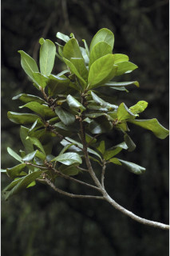
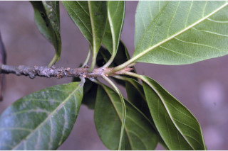
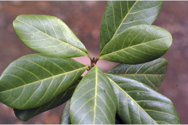
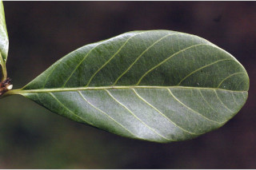
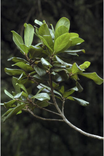
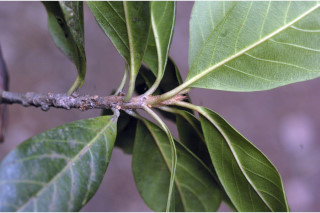
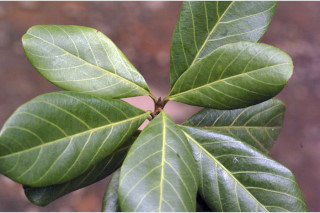
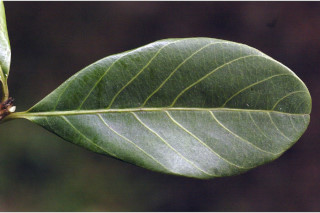
 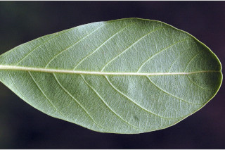
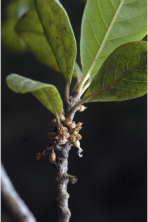
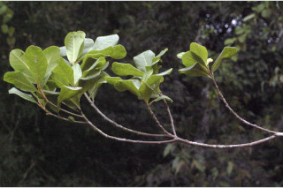
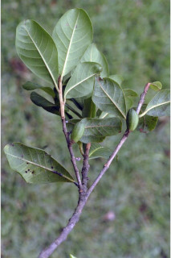
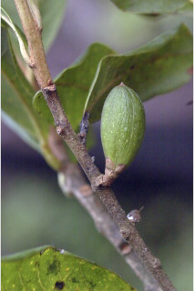
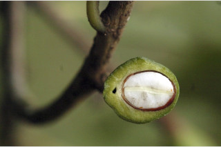
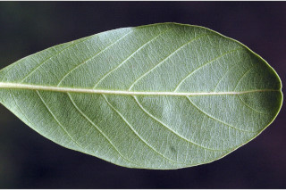
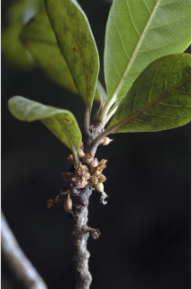
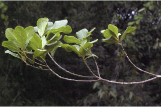
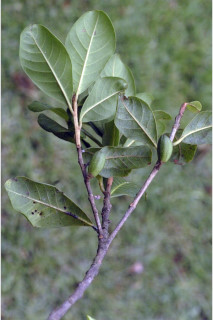
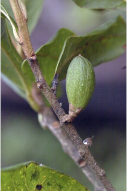
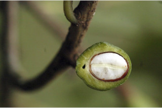